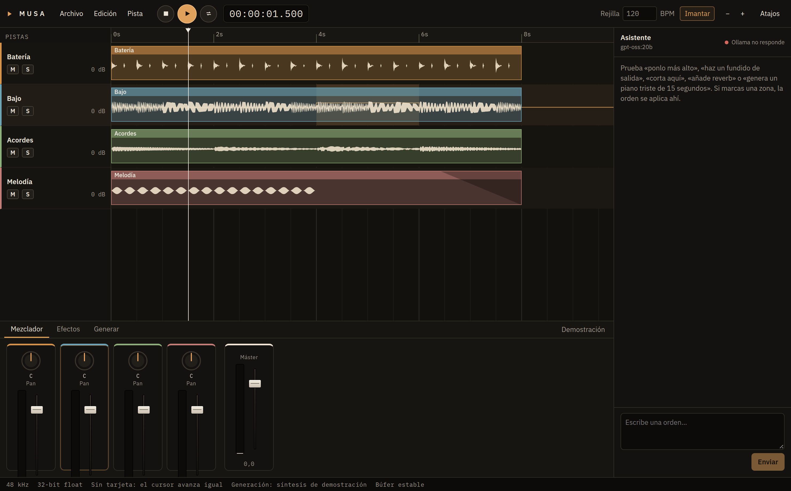
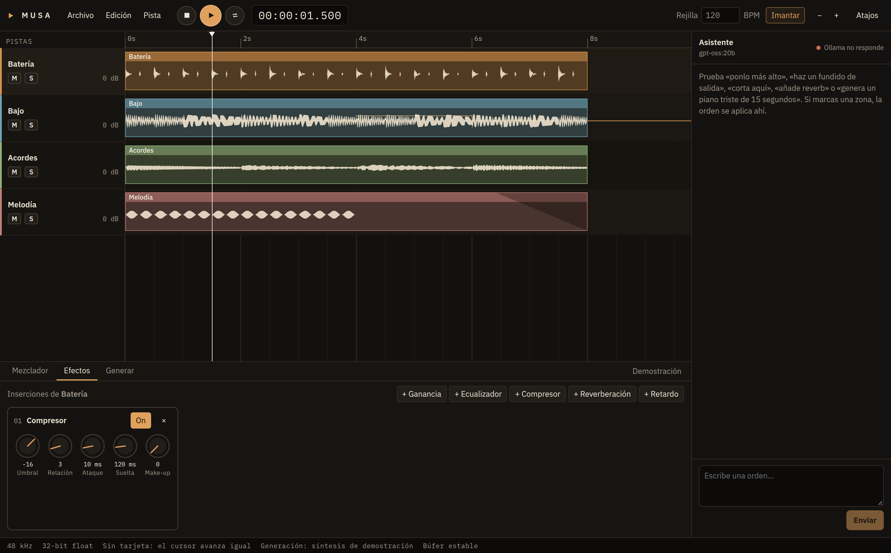
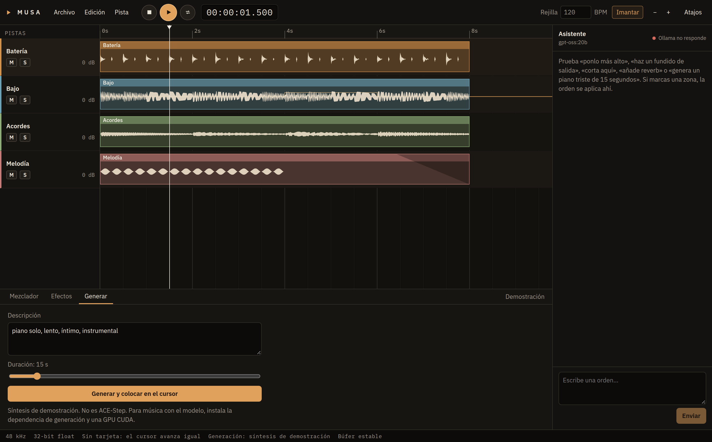
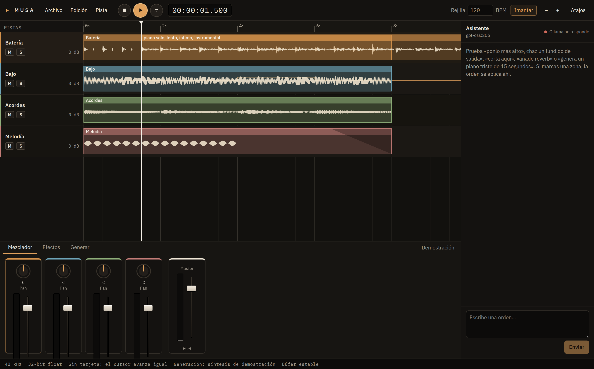
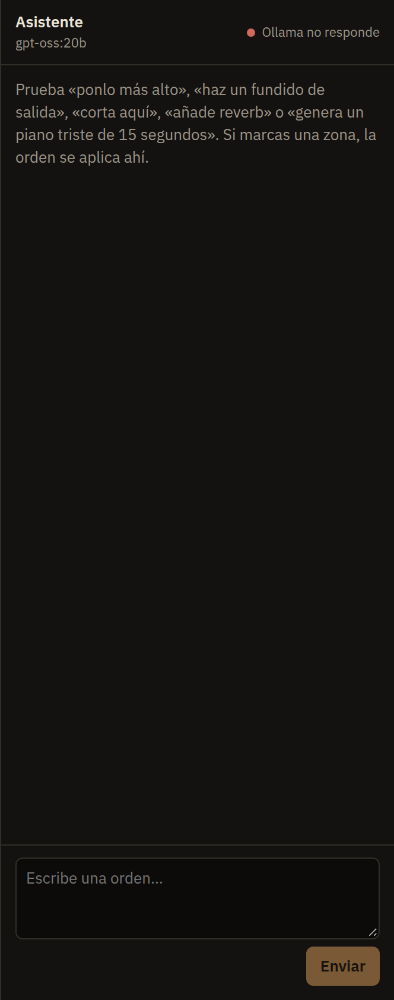

Aplicación para Windows
Musa
Un estudio de edición de música, como un editor de vídeo pero para el audio, con inteligencia artificial local integrada.
Las órdenes en lenguaje natural actúan sobre la zona marcada. La música se genera en local, en la GPU.
«En desarrollo»
Todavía no hay descarga.
- Inicio
- 11 de noviembre de 2026
- Plataforma
- Windows
- Licencia
- GPL-3.0-only

01
Qué es
-
01
Editor de audio
Un estudio de edición de música, como un editor de vídeo pero para el audio.
-
02
Zona marcada
Las órdenes en lenguaje natural actúan sobre la zona marcada.
-
03
Inteligencia artificial local
La inteligencia artificial va integrada. La música se genera en local, en la GPU.
02 · «En desarrollo»
Fase 1
Musa empezó el 11 de noviembre de 2026. Esta fase incluye un estudio multipista, un asistente local y la generación de música con ACE-Step.




-
01
Estudio multipista
Un estudio multipista para editar el audio. Forma parte de la fase 1, en desarrollo.
-
02
Asistente local
Un asistente local. Las órdenes en lenguaje natural actúan sobre la zona marcada.
-
03
Generación con ACE-Step
Generación de música con ACE-Step, en local y en la GPU.